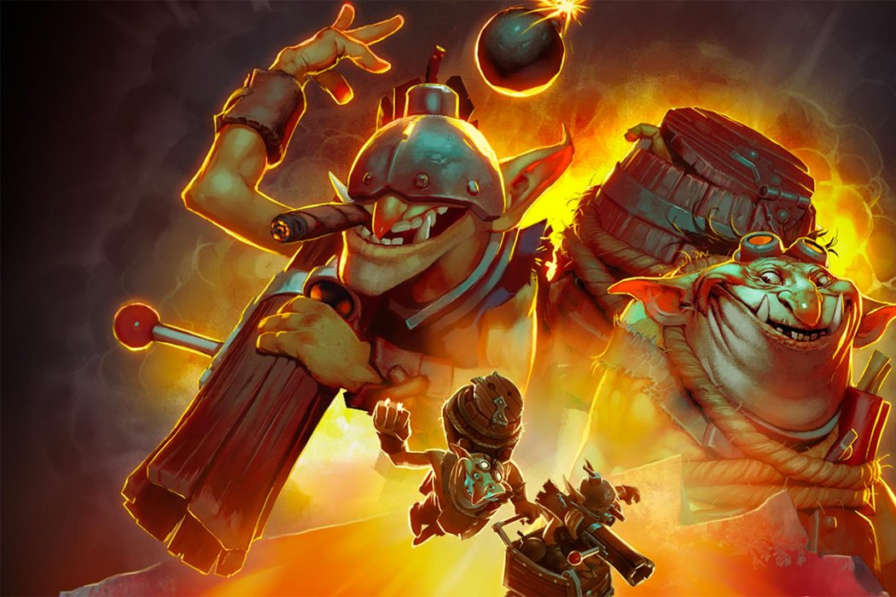
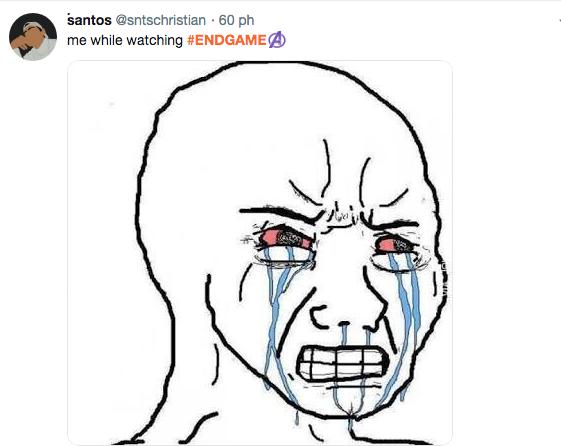
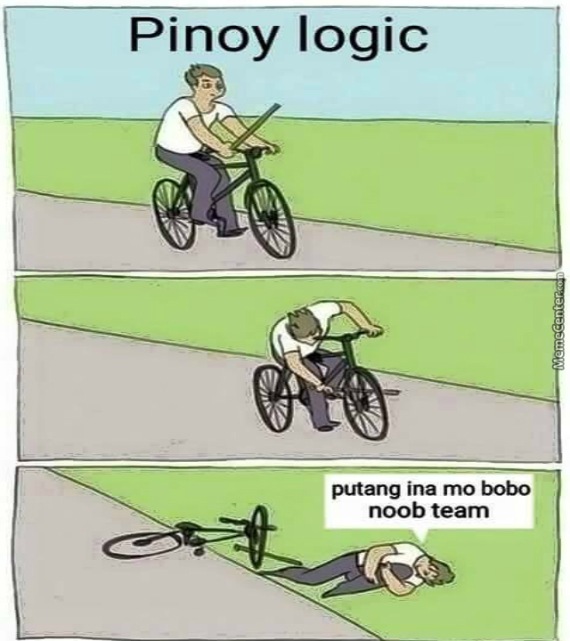

Được gì sau hơn chục năm chơi game?

Mình đã chơi các game như pikachu, cướp đường phố, võ lâm truyền kỳ 1, võ lâm truyền kỳ 2, phong thần, kiếm thế, đế chế, half-life, Dota2, thục sơn kỳ hiệp,vv. Xem những phim về game như: sword art online 1, sword art online 2, toàn chức cao thủ, vv. Kết bạn và follow hàng loạt cao thủ chơi game, xem hàng tá clip game, vv. Đọc hàng trăm bài phân tích, bình luận về game. Cuối cùng là thiệt hại ngân sách hàng tỷ đồng (chém tý :D) trong suốt thời gian từ cấp 2 đến giờ và hiện tại mình không chơi game nào nữa. Nhìn lại rút ra được một số cái lợi như sau:
Xả stress
Rõ ràng, khi nhắc đến chơi game thì mọi người nghĩ ngay tới mục đích để xả stress sau những lúc căng thẳng.
Hồi đi thực tập, mình chơi trò đế chế với một nhóm bạn và sau đó cùng nhóm bạn chuyển qua chơi dota 2. Quả thực, cứ đến cuối tuần làm việc mệt nhọc lại setup một kèo chơi game thì không còn gì bằng vì cái cảm giác ngày cuối tuần đã đến, bung lụa setup kèo và chơi thôi nó sung sướng đến nỗi quên hết những mệt nhọc của tuần vừa qua, được la hét, chửi bới, cà khịa…, nó còn tạo nên chuyện để tuần tiếp theo anh em bàn tán, chém gió và những lúc đó lại lôi 1 con gà trong team ra để làm vật tế cho đại hội làm nhục, cảm giác lúc đó sung sướng làm sao!!!
Có thêm bạn bè
Dĩ nhiên, các trò chơi sẽ giúp gắn kế con người, không phải ngẫu nhiên mà bóng đá là môn thể thao vua mà là vì nó thu hút lượng nguời hâm mộ đông nhất thế giới.
Như mình nói ở trên, mình có một team chơi game và đến giờ vẫn còn giữ liên lạc. Éo hiểu sao vẫn giữ liên lạc với mấy ông đực rựa đó nữa. LOL =))
Riêng với mình thì số lượng mối quan hệ có được từ chơi game khá khiêm tốn, nhưng có một số người chơi game còn có cả một lượng fan nhất định. Như với một số người lại khác, thằng bạn bảo ở trường cấp 3 ổng, ai chơi game giỏi đi đâu cũng được nể và nhìn với con mắt khác. Nhiều hơn nữa, mấy ông idol chơi game rồi stream còn có cản ngàn người theo dõi, có cả một cộng đồng. Thời nay, những người đó không khác gì các ca sỹ, nghệ sỹ nổi tiếng cả.
Mindset
Có lẽ thứ mình được nhiều nhất và muốn viết nhiều nhất đó chính là mindset. Để mình phân tích cho bạn về cách tư duy mà mình học được và nó ảnh hưởng như thế nào đến cuộc sống mình. Sao mình lại đánh giá cao nó vậy. Nhưng trước hết, để mình nói về một số tư duy cơ bản đã:
Thái độ chơi game
Thái độ làm nên tất cả, có 2 thái độ khi chơi game. Thứ nhất là chơi game xả stress như mình viết ở đầu. Tuy nhiên, bạn có thấy có những lúc chơi game xong bạn lại cay cú, đập bàn đập ghế, đập bạn thân (LOL), hay cay quá ngủ không được không?

Vì có những người có thái độ chơi game thứ hai đó là chơi game cho giỏi. Hầu hết mọi người đều không phân biệt được 2 thái độ này, họ lao vào chơi theo bản năng, nghe theo bạn bè nhưng không xác định rõ thái độ của mình là muốn chơi xả stress hay chơi cho giỏi. Người muốn chơi xả stress cho vui, coi thắng thua không quan trọng còn người muốn chơi cho giỏi thì rất quan trọng việc thắng thua, hơn kém. Điều đó dẫn đến nhiều lúc cãi lộn nhau.
Chuyện sẽ dễ dàng nếu ai cũng xác định được thái độ của mình và thẳng thắn nói cho nhau thì mọi chuyện sẽ giải quyết êm đẹp phải không? Kiểu như t thích chơi để xả stress thôi, m muốn chơi với t cho vui hay để thắng? nếu chơi cho vui thì t chơi, không thì nghỉ. OK?
Thực tế lại không vậy, người ta lẫn lộn hoặc không xác định rõ thái độ của mình. Người có thái độ thứ 1 nhưng lại muốn có thành quả tốt như người có thái độ thứ 2. Người có thái độ 2 lại không chấp nhận được người có thái độ một mà muốn họ phải như mình, ép họ phải chơi khổ sở như mình để thắng… Người nào rơi vào tình trạng không xác định thì rất giống kẻ hời hợt, cà chớn, giỏi không giỏi, chơi thì cứ chơi nhiều. Đó cũng là lỗi nghiêm trọng mình mắc phải trước đây!
Hàm mục tiêu của game.
Bỏ qua thái độ chơi game để giải trí đi. Vì nó không có gì đáng nói. Giờ ta tập trung vào tư duy chơi game để giỏi lên.
Một trong số việc cần làm để chơi game giỏi lên đó chính là phải xác định được hàm mục tiêu của game là gì. Hàm mục tiêu của bất cứ game nào cũng là hàm đa biến: tỷ lệ thắng = f(x0, x1, x2, … , xn). Trong đó các x là các nhân tố ảnh hưởng đến tỷ lệ thắng, các nhân tố này có thể là kỹ năng cá nhân, chiến thuật, tâm lý, vv. Đa số chúng ta không có nhận thức về hàm mục tiêu cũng như không biết các nhân tố ảnh hưởng đến kết quả của hàm mục tiêu. Trước đây mình cũng phạm lỗi nghiêm trọng này. Để mình nói kỹ hơn về lỗi này của mình như là một ví dụ sau.
Ví dụ: Trước đây mình chơi dota2, khi vào game mình thích cảm giác giết player khác. Chỉ số giết càng lớn, chỉ số chết càng ít thì càng “ngầu”. Đa số đại hội làm nhục của team mình chơi đều chú trọng vào cái này: nào là m feed như chó, 4 vs 6, m tạ vl, và những blame đó để lấy chỉ số giết/chết ra làm cơ sở.

À vâng, hồi đó trình độ rank tầm 1k chứ mấy =)).
Nhưng ở ví dụ đó, ngay từ đầu mình đã không ý thức được hàm mục tiêu của game cũng như thái độ của mình. Mình cũng được ăn hành kha khá và được bách nhục xuyên tâm khá nhiều, và như một hệ quả của ngu dốt cộng với nhiệt tình, mình đã lao vào xem các pro khác chơi, ngồi xem highlight xử lý nhanh như chớp của họ… để học xử lý tay nhanh, vâng học được đến nỗi tay nhanh hơn não cơ =)). Rồi bạn biết rồi đó, mình vẫn ăn hành, lúc chơi thì bấm loạn cả lên, những lúc nguy hiểm là nghe theo thằng ngồi cạnh chỉ luôn, nó bảo làm gì làm nấy luôn, não dừng suy nghĩ luôn. Thật tệ hại, thảm bại, loser phải không?
Quay lại với hàm mục tiêu, với dota2, hàm mục tiêu để thắng sẽ gồm nhiều yếu tố chính như: kiến thức về game, chiến thuật, kỹ năng thao tác, tâm lý, teamwork…, để thắng, ta phải hội tụ những nhân tố đó và sử dụng nó sao cho hàm mục tiêu đạt cao nhất. Nghĩa là bạn vào game làm cái éo gì cũng được, miễn sao tỷ lệ thắng cao nhất. Và sai lầm của mình như ví dụ trên đó là chỉ tập trung vào 1 nhân tố duy nhất đó là kỹ năng thao tác! Còn các nhân tố còn lại hầu như bằng 0: ngại tìm hiểu về các nhân vật trong game, chỉ tự tin chơi một vài tướng và không thử tướng mới, không biết chiến thuật gì cả, cảm xúc tâm lý thì lúc nào cũng cao (cảm xúc là kẻ thù số 1 của thành công), không có phối hợp để ý gì đến đồng đội, bala.
Mình nhận thức được điều này cũng khá lâu rồi, sau đó mình sửa lại hàm mục tiêu của mình và không lâu sau thì thì từ 1k lại lên được hơn 2k dễ dàng. Tất nhiên là mỗi nhân tố mình liệt kê trên sẽ có rất nhiều nghệ thuật áp dụng, để viết hết nghệ thuật đó ra chắc chắn là tốn nhiều giấy mực, nếu mình chơi tiếp mình sẽ vẫn lên được rank nữa vì càng ngày mình càng nghĩ ra nhiều nghệ thuật trong các nhân tố đó. Đơn cử 1 ví dụ như khi xem kênh của thằng #kemchodien, mình phát hiện ra thằng này rất toxic, nhưng lại rank rất cao, thằng này cứ vào game là hay chửi, mà trước giờ mình gặp thằng nào toxic cũng là thằng chơi ngu, cancer rank thấp. Mình về sau mình phát hiện ra hắn ta chửi nhưng có mục đích, hắn chỉ chửi thành viên team đối thủ, tuyệt đối không bao giờ chửi đồng đội! Cho dù mồm vẫn lẩm bẩm chửi nó như chó nhưng vẫn chat lên mặt cười. Chính đó là một nghệ thuật để giữ hàm mục tiêu đạt giá trị cao, chửi đối thủ để đối thủ mất bình tĩnh, còn đối với team mình thì nhịn nhục hết cỡ để làm sao giữ được cho đồng đội bình tĩnh. Một nghệ thuật đơn giản phải không?
Nói chung khi ta có ý thức về hàm mục tiêu chơi game, thì ta làm cái vẹo gì cũng được, miễn sao hàm mục tiêu đạt giá trị cao thì tỷ lệ thắng sẽ cao.
Luyện tập
Người chơi nhiều chưa chắc đã giỏi, và nguời chơi giỏi chưa chắc đã chơi nhiều. Có 2 công thức để thành tài: 1 là quy tắc 10 ngìn giờ và 2 là không được phạm lỗi đã từng mắc. Tức là khi luyện tập để giỏi hơn cần 2 yếu tố là thành thạo và cải tiến.
Quy tắc 10 ngàn giờ được biết đến khi bạn chơi một cái nhạc cụ nào đó, thường thì sẽ cần độ thành thạo và cảm xúc. Mình trước đây luyện tập cứ lao vào chơi game này qua game khác, có hôm thua nhiều cú quá là cứ chơi đến sáng luôn, nhưng game nào cũng chơi vì cảm xúc thắng thua, còn việc mình phạm phải lỗi gì và đã sửa được chưa thì không quan tâm. Như vậy mình có thể đạt được mục tiêu 10 ngàn giờ nhưng sẽ không bao giờ thành tài được. Mình chỉ sẽ là 1 nguời thành thạo thao tác chơi chứ không phải chơi giỏi. Điều này sẽ đẻ ra được 1 thằng cancer tay nhanh hơn não mà thôi.
Cảm xúc
Vâng, cảm xúc là kẻ thù số một của thành công (Lê Thẩm Du, nhầm Dương).
Nhiều lúc động lực chơi game để có thể ngồi hàng giờ đó là cảm xúc giết chóc và thắng thua, đôi khi run run chẳng hạn như thắng được 2 ván rồi giờ chơi thêm ván nữa thì sợ sợ sẽ bị thua tụt rank.
Cũng vì cảm xúc mà xem stream game của những thắng khác cả ngày không chán. Khi xem stream đó ta có đang học tập các chiến thuật hay không? có chịu khó phân tích các tính huống, đoán họ sẽ xử lý gì tiếp theo hay không, hay đơn giản chỉ là ngồi xem, chỉ xem, thấy idol bị một thằng chửi sau đó idol đánh và comback lại rồi chửi lại nó là thấy sướng…
Tất cả chỉ vì cảm xúc nhưng sau đó có làm bạn giỏi hơn không? Không! Nó sẽ dắt mũi ta tốn thời gian và sức khỏe vào những thứ đi qua như một câu chuyện mà không đọng lại được gì. Cuối cùng mình vẫn gà.
Mình cụng lạ là mình hồi trước cũng thuộc cái đám sống vì cảm xúc đó. Rảnh háng =))
Kỷ luật
Tất cả những gì làm bạn bỏ công sức để chơi hàng giờ một cách vui vẻ đó là do cảm xúc. Thế còn ngày nào cũng dành chừng ấy thời gian để chơi game đều đặn và những lúc chơi game không cảm thấy vui vẻ, chơi game thấy mệt mỏi, nhưng ta vẫn chơi thì sao? Đó là nhờ vào tính kỷ luật.
Các pro player đều phải có tính kỹ luật này. Ví dụ như mình đượng biết thì player #minhnhannguyen của dota2 hằng ngày dành vài tiếng vào chế độ test để test tướng, thử các kỹ thuật. Những việc làm này lặp đi lặp lại và nó rất đau đớn, chán nản. Nhưng mà no pain no gain. Nếu không có sự kỷ luật và nghiêm túc thì ta vẫn chỉ là đứa hời hợt, không đâu vào đâu cả!
Tóm lại, xác định hàm mục tiêu, luyện tập, loại bỏ cảm xúc, tăng tính kỷ luật là một số tư duy cơ bản quan trọng nhất tọa nên mindset chơi game. Tất nhiên còn nhiều tư duy cơ bản khác nữa nhưng ít quan trọng hơn.
Kết
Chơi game đen lại cho mình nhiều thứ rất quan trọng như mối quan hệ bạn bè, tư duy.
Khi học được mindset này trong game, mình đã áp dụng điều này vào trong cuộc sống và thấy nó không những hiệu quả trong game mà còn hiệu quả cả ở cuộc đời. Hóa ra cuộc đời cũng là một trò chơi mà hàm mục tiêu là tạo ra thành công? còn thành công như thế nào thì tùy định nghĩa của xã hội và của mỗi người đó? Mình không chắc nhưng đối với mình thì mình tin vậy. Đó là lý do mình nói từ đầu, chơi game giúp mình có mindset này và nó rất quan trọng với mình
Hiện tại thì mình không chơi game thường xuyên nữa? tại sao chơi game có nhiều lợi ích vậy mà mình không chơi thường xuyên nữa? Là bởi hàm mục tiêu cuộc sống của mình sẽ giảm giá trị nếu mình chơi game quá nhiều trong khi sự nghiệp của mình không phải là trở thành game thủ chuyên nghiệp. Nhưng hàm mục tiêu sự nghiệp của mình cũng không cao hơn nếu mình loại bỏ hẳn game ra khỏi cuộc đời. Vì thế nếu như ai đó rủ mình chơi game thì có lẽ mình vẫn chơi, vì xả stress, vì mối quan hệ bạn bè, vì động não, thực nghiệm mindset!
Nhân tiện gửi tới mấy ông đực rựa chơi game cùng, dm các ông, các ông làm tôi phải suy nghĩ nhiều rồi đó =))